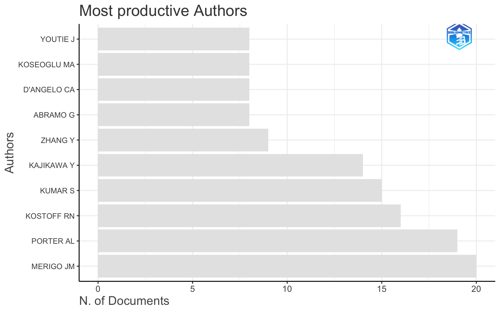
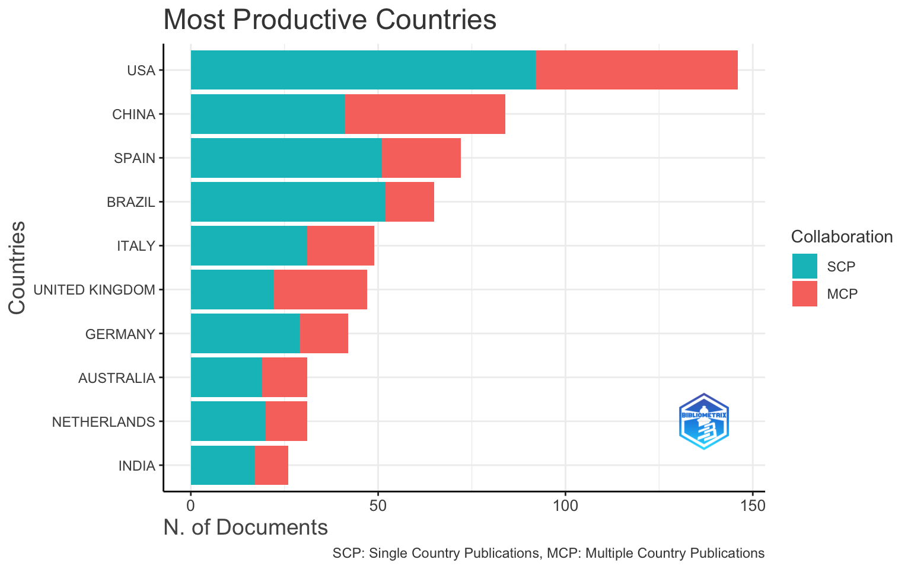
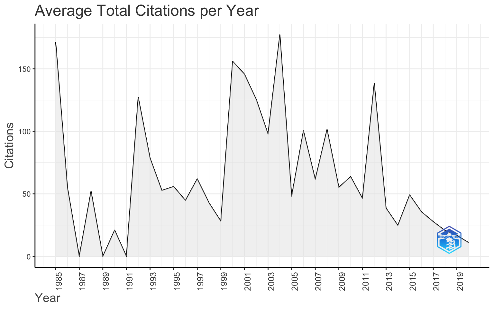
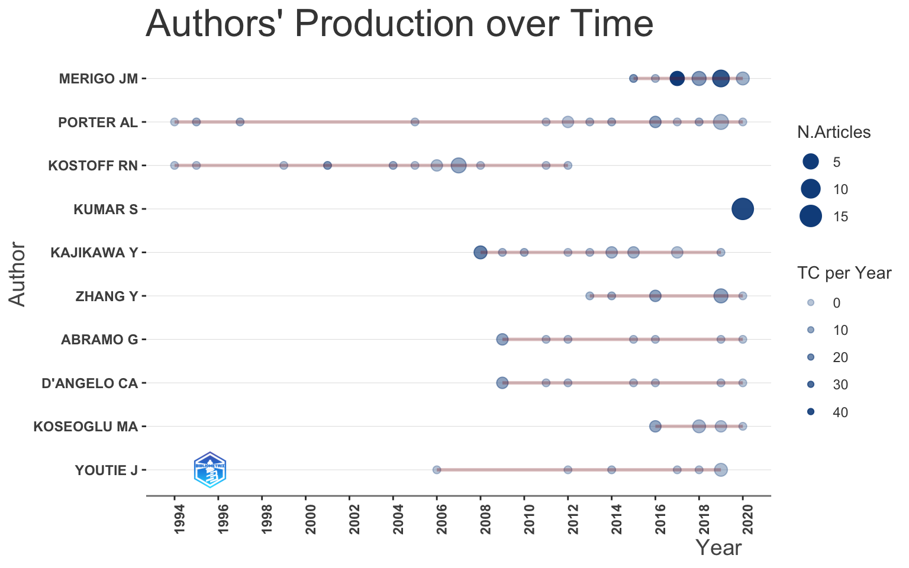

# Pacote principal e dados de exemplo
install.packages("bibliometrix") # funções de análise
install.packages("bibliometrixData") # bases de dados de exemploBibliometria Analítica e Indicadores Científicos
Atividade prática — Equipe 7 · bibliometrix & Biblioshiny
Apresentação da atividade
Tema da Equipe 7: Bibliometria analítica e indicadores científicos. Ferramenta:
bibliometrix(pacote R) + Biblioshiny (interface web do pacote).
O bibliometrix é um pacote R para science mapping (mapeamento científico). O Biblioshiny é a interface gráfica (Shiny) que roda por cima do mesmo pacote: tudo o que você faz clicando no Biblioshiny corresponde a uma função do bibliometrix. Nesta atividade você vai executar essas funções no código e, ao final, vai aprender a reproduzir cada passo no Biblioshiny.
O que você vai entregar (ver checklist no fim):
- Este notebook executado (
.Rmd+ versão em PDF). - Uma tabela-síntese de indicadores do seu corpus.
- Pelo menos um gráfico de evolução temporal e um de produtividade de autores.
Pré-requisitos e instalação
Rode o bloco abaixo uma única vez para instalar os pacotes. Depois pode comentá-lo novamente (mantenha o #) para não reinstalar a cada execução.
Carregue os pacotes:
library(bibliometrix)Dica: para abrir a interface gráfica a qualquer momento, basta rodar
biblioshiny()no console. Não rode dentro do notebook — ela abre no navegador.
Conceito: Biblioshiny vs bibliometrix
| No Biblioshiny (clicando) | No bibliometrix (no código) |
|---|---|
| Importar arquivo | convert2df() |
| Main Information | biblioAnalysis() + summary() |
| Annual Scientific Production | summary()$AnnualProduction / plot() |
| Most Relevant Sources / Bradford | bradford() |
| Authors → Lotka | lotka() |
| Authors → Author Impact (H/G/M) | Hindex() |
| Authors’ Production over Time | authorProdOverTime() |
| Most Cited Documents | citations() |
| Three-Field Plot (Sankey) | threeFieldsPlot() |
A lição central: o Biblioshiny é didático e rápido; o código é reprodutível e auditável. Quem domina as funções entende o que cada tela está calculando.
Importação do corpus de dados
Nesta atividade usaremos um corpus de exemplo já incluído no pacote para que todos consigam executar sem depender de download. No seu trabalho final, você substituirá este passo pela importação dos seus próprios arquivos (exportados do Scopus, Web of Science, OpenAlex, etc. — conexão com as Equipes 1 e 2).
Corpus de exemplo (use agora)
data(management, package = "bibliometrixData")
M <- management
dim(M) # nº de documentos (linhas) x nº de campos (colunas)[1] 898 67Como importar o SEU corpus (modelo para o trabalho final)
# Exemplo: arquivo BibTeX exportado do Scopus salvo na mesma pasta do notebook
M <- convert2df(
file = "scopus.bib",
dbsource = "scopus", # "wos", "scopus", "openalex", "dimensions", "lens", "pubmed"
format = "bibtex" # "bibtex", "plaintext", "csv", "api"
)🧪 Sua vez 1: confirme o tamanho do corpus com
dim(M)e descubra o intervalo de anos comrange(M$PY, na.rm = TRUE).
range(M$PY, na.rm = TRUE)[1] 1985 2020Análise descritiva (a base de tudo)
biblioAnalysis() calcula as principais medidas; summary() as exibe.
results <- biblioAnalysis(M, sep = ";")
S <- summary(results, k = 10, pause = FALSE, verbose = FALSE)O objeto S guarda tabelas que você pode reutilizar:
S$MainInformationDF # Documentos, autores, período, crescimento anual, citações médias... Description Results
1 MAIN INFORMATION ABOUT DATA
2 Timespan 1985:2020
3 Sources (Journals, Books, etc) 281
4 Documents 898
5 Annual Growth Rate % 14.05
6 Document Average Age 11.2
7 Average citations per doc 37.12
8 Average citations per year per doc 2.788
9 References 43935
10 DOCUMENT TYPES
11 article 862
12 article; book chapter 1
13 article; early access 9
14 article; proceedings paper 26
15 DOCUMENT CONTENTS
16 Keywords Plus (ID) 1918
17 Author's Keywords (DE) 2243
18 AUTHORS
19 Authors 2079
20 Author Appearances 2657
21 Authors of single-authored docs 112
22 AUTHORS COLLABORATION
23 Single-authored docs 121
24 Documents per Author 0.432
25 Co-Authors per Doc 2.96
26 International co-authorships % 36.41
27 🧪 Sua vez 2: localize na tabela acima o Annual Growth Rate e a média de citações por documento. Anote os dois valores — são indicadores centrais do seu tema.
Indicador 1 — Produção científica anual (evolução temporal)
A evolução temporal mostra a maturidade e o ritmo de crescimento do campo.
plot(results, k = 10, pause = FALSE)




Para obter só a tabela ano a ano (útil para a tabela-síntese):
S$AnnualProduction Year Articles
1 1985 2
2 1986 2
3 1988 1
4 1990 1
5 1992 4
6 1993 5
7 1994 4
8 1995 7
9 1996 4
10 1997 3
11 1998 4
12 1999 6
13 2000 3
14 2001 4
15 2002 4
16 2003 5
17 2004 5
18 2005 10
19 2006 13
20 2007 11
21 2008 13
22 2009 18
23 2010 32
24 2011 33
25 2012 27
26 2013 34
27 2014 34
28 2015 62
29 2016 62
30 2017 80
31 2018 81
32 2019 125
33 2020 199🧪 Sua vez 3: identifique o ano de maior produção e descreva em uma frase o padrão de crescimento (linear, exponencial, com queda recente?).
Indicador 2 — Fontes/periódicos e Lei de Bradford
A Lei de Bradford identifica o “núcleo” de periódicos que concentra a maior parte dos artigos relevantes — essencial para focar leituras e submissões.
BR <- bradford(M)
head(BR$table, 10) # zona "Core" = periódicos do núcleo SO Rank Freq cumFreq Zone
1 TECHNOLOGICAL FORECASTING AND SOCIAL CHANGE 1 97 97 Zone 1
2 RESEARCH POLICY 2 83 180 Zone 1
3 TECHNOLOGY ANALYSIS & STRATEGIC MANAGEMENT 3 31 211 Zone 1
4 JOURNAL OF BUSINESS RESEARCH 4 28 239 Zone 1
5 SCIENCE AND PUBLIC POLICY 5 25 264 Zone 1
6 TECHNOVATION 6 19 283 Zone 1
7 JOURNAL OF TECHNOLOGY TRANSFER 7 12 295 Zone 1
8 INTERNATIONAL JOURNAL OF CONTEMPORARY HOSPITALITY MANAGEMENT 8 10 305 Zone 1
9 INTERNATIONAL JOURNAL OF INNOVATION AND TECHNOLOGY MANAGEMENT 9 10 315 Zone 2
10 R & D MANAGEMENT 10 10 325 Zone 2🧪 Sua vez 4: quantos periódicos formam a zona Core (núcleo) do seu corpus? Liste os 3 principais.
Indicador 3 — Autores: produtividade e Lei de Lotka
A Lei de Lotka descreve a distribuição da produtividade: poucos autores publicam muito, muitos publicam pouco (lei do inverso do quadrado).
# A assinatura de lotka() mudou entre versões do bibliometrix:
# versão atual (CRAN 5.x): lotka(M) -> M = data frame, classe "bibliometrixDB"
# versões antigas: lotka(results) -> saída de biblioAnalysis, classe "bibliometrix"
# O bloco abaixo escolhe automaticamente a forma que funciona:
invisible(capture.output(L <- lotka(M))) # tenta a forma atual
if (!is.list(L)) L <- lotka(results) # se vier NA, usa a forma antiga
L$AuthorProd # nº de autores por nº de artigos Documents written N. of Authors Proportion of Authors
1 1 1763 0.8480038480
2 2 210 0.1010101010
3 3 64 0.0307840308
4 4 15 0.0072150072
5 5 6 0.0028860029
6 6 10 0.0048100048
7 7 1 0.0004810005
8 8 4 0.0019240019
9 9 1 0.0004810005
10 14 1 0.0004810005
11 15 1 0.0004810005
12 16 1 0.0004810005
13 19 1 0.0004810005
14 20 1 0.0004810005cat("Beta estimado:", round(L$Beta, 3),
"| R2 (ajuste):", round(L$R2, 3),
"| p-valor (KS):", round(L$p.value, 4), "\n")Beta estimado: 2.526 | R2 (ajuste): 0.897 | p-valor (KS): 0.0604 Interpretação: o Beta teórico de Lotka é 2. Quanto mais próximo, mais o seu campo segue o padrão clássico de concentração de produtividade.
Produção dos principais autores ao longo do tempo
topAU <- authorProdOverTime(M, k = 10, graph = TRUE)
head(topAU$dfAU) # tabela: autor, ano, nº de artigos, citações Author year freq TC TCpY
1 ABRAMO G 2009 2 200 11.111111
2 ABRAMO G 2011 1 26 1.625000
3 ABRAMO G 2012 1 28 1.866667
4 ABRAMO G 2015 1 20 1.666667
5 ABRAMO G 2016 1 18 1.636364
6 ABRAMO G 2019 1 11 1.375000🧪 Sua vez 5: qual autor tem a trajetória mais longa (mais anos ativos)? E qual tem a maior produção concentrada em poucos anos?
Indicador 4 — Impacto: índices H, G e M
Hindex() calcula, para cada autor, os índices h, g e m:
- h-index: o autor tem h artigos com pelo menos h citações cada.
- g-index: dá mais peso aos artigos mais citados.
- m-index: h-index dividido pelos anos de carreira (corrige por tempo).
# Seleciona os 10 autores mais produtivos para calcular o impacto
autores <- gsub(",", " ", names(results$Authors)[1:10])
H <- Hindex(M, field = "author", elements = autores, sep = ";", years = Inf)
H$H[order(-H$H$h_index), ] # ordenado pelo h-index Element h_index g_index m_index TC NP PY_start
7 MERIGO JM 14 20 1.1666667 1159 20 2015
5 KOSTOFF RN 13 16 0.3939394 932 16 1994
3 KAJIKAWA Y 11 14 0.5789474 830 14 2008
8 PORTER AL 10 19 0.3030303 748 19 1994
6 KUMAR S 8 15 1.1428571 292 15 2020
1 ABRAMO G 7 8 0.3888889 304 8 2009
2 D'ANGELO CA 7 8 0.3888889 304 8 2009
10 ZHANG Y 7 9 0.5000000 342 9 2013
4 KOSEOGLU MA 6 8 0.5454545 165 8 2016
9 YOUTIE J 5 8 0.2380952 78 8 2006🧪 Sua vez 6: compare o autor mais produtivo (mais artigos) com o de maior impacto (maior h-index). São a mesma pessoa? O que isso sugere sobre a diferença entre quantidade e influência?
Indicador 5 — Documentos e referências mais citados
CIT <- citations(M, field = "article", sep = ";")
head(CIT$Cited, 10) # referências mais citadas pelo corpusCR
VAN ECK NJ, 2010, SCIENTOMETRICS, V84, P523, DOI 10.1007/S11192-009-0146-3
124
SMALL H, 1973, J AM SOC INFORM SCI, V24, P265, DOI 10.1002/ASI.4630240406
120
RAMOS-RODRIGUEZ AR, 2004, STRATEGIC MANAGE J, V25, P981, DOI 10.1002/SMJ.397
108
ANONYMOUS, NO TITLE CAPTURED
86
PRITCHARD A, 1969, J DOC, V25, P348
74
BARNEY J, 1991, J MANAGE, V17, P99, DOI 10.1177/014920639101700108
73
HIRSCH JE, 2005, P NATL ACAD SCI USA, V102, P16569, DOI 10.1073/PNAS.0507655102
71
ZUPIC I, 2015, ORGAN RES METHODS, V18, P429, DOI 10.1177/1094428114562629
71
KESSLER MM, 1963, AM DOC, V14, P10, DOI 10.1002/ASI.5090140103
67
NERUR SP, 2008, STRATEG MANAGE J, V29, P319, DOI 10.1002/SMJ.659
67 🧪 Sua vez 7: as referências mais citadas costumam ser os “clássicos” da área. Identifique 2 e comente se você as conhece.
Tabela-síntese de indicadores (entregável principal)
Consolide os principais indicadores em uma única tabela — é o coração do tema “indicadores científicos”.
# Crescimento anual: campo dedicado do summary (não depende de nomes de coluna)
agr <- round(S$AnnualGrowthRate, 2)
sintese <- data.frame(
Indicador = c(
"Documentos (total)",
"Fontes/periódicos",
"Autores",
"Período coberto",
"Crescimento anual (%)",
"Média de citações por documento",
"Autores por documento",
"Documentos por autor"
),
Valor = c(
nrow(M),
length(unique(M$SO)),
length(results$Authors),
paste(range(M$PY, na.rm = TRUE), collapse = " – "),
agr,
round(mean(as.numeric(M$TC), na.rm = TRUE), 2),
round(length(results$Authors) / nrow(M), 2),
round(nrow(M) / length(results$Authors), 2)
)
)
knitr::kable(sintese, caption = "Indicadores bibliométricos do corpus")| Indicador | Valor |
|---|---|
| Documentos (total) | 898 |
| Fontes/periódicos | 281 |
| Autores | 2079 |
| Período coberto | 1985 – 2020 |
| Crescimento anual (%) | 14.05 |
| Média de citações por documento | 37.12 |
| Autores por documento | 2.32 |
| Documentos por autor | 0.43 |
🧪 Sua vez 8: adapte esta tabela ao seu corpus real e exporte-a:
write.csv(sintese, "indicadores.csv", row.names = FALSE).
Bônus — Visão integrada (Sankey)
O three-field plot conecta três dimensões ao mesmo tempo (ex.: Autores → Palavras-chave → Fontes), ótimo para a apresentação final (conexão com a Equipe 8).
threeFieldsPlot(M, fields = c("AU", "DE", "SO"), n = c(20, 20, 20))(Definimos
eval=FALSEporque gera um widget interativo; rode no seu console para visualizar.)
Reproduzindo tudo no Biblioshiny
Abra a interface e siga o mapa abaixo:
biblioshiny()| Passo no Biblioshiny | Equivale a |
|---|---|
| Data → Load Data → Import raw files | convert2df() |
| Overview → Main Information | biblioAnalysis() + summary() |
| Overview → Annual Scientific Production | gráfico de produção anual |
| Sources → Most Relevant Sources / Bradford’s Law | bradford() |
| Authors → Most Relevant Authors / Lotka’s Law | lotka() |
| Authors → Authors’ Production over Time | authorProdOverTime() |
| Authors → Author Impact (h-index) | Hindex() |
| Documents → Most Global Cited Documents | citations() |
Tarefa de fechamento: escolha um indicador desta atividade, gere-o no Biblioshiny e confirme que o número bate com o do seu código. Tire um print — ele entra na apresentação da Equipe 8.
Checklist de entrega
Seguindo o Padrão de Entrega da capacitação:
Desafios finais (para discussão da equipe)
- O seu campo segue a Lei de Lotka (Beta ≈ 2)? O que um desvio significaria?
- O autor mais produtivo é também o mais influente? Por quê?
- Olhando a produção anual, o campo está em ascensão, maturidade ou declínio?
- Qual indicador você defenderia como o mais importante para avaliar a qualidade de um corpus — e por quê?
Referência do pacote: Aria, M. & Cuccurullo, C. (2017). bibliometrix: An R-tool for comprehensive science mapping analysis. Journal of Informetrics, 11(4), 959–975. Documentação: bibliometrix.org